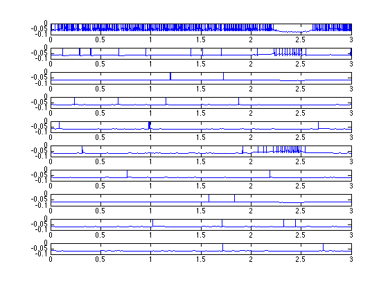

This is a readme for the model associated with our paper: Matsui H, Zheng M, Hoshino O (2014) Facilitation of neuronal responses by intrinsic default mode network activity. Neural Comput. 2014 Nov;26(11):2441-64. This model simulates how default mode network activity affects sensory information processing. The code was developed by Hiroakira Matsui. The model is presented in C code and contains the following files: *DMN.c : The program source code. *MT19937.h : Header file of random number generator. This is free file of Mersenne twister algorism. (http://www.math.sci.hiroshima-u.ac.jp/~m-mat/MT/MT2002/emt19937ar.html) *parameter.h : All parameters to be required with this model are included. Especially, you can regulate strength of tonic and phasic excitation by changing of 'w_Ia_DMN' and 'w_p_DMN_Nsen' in this file, respectively. Usage: After the putting all files in the same directory, compile DMN.c and run it. Sample linux compile and run commands at the shell prompt are: gcc DMN.c -Ilib -lm -o DMN ./DMN This program makes following files. *data.csv : This file shows membrane potentials of neurons and concentrations of ambient-GABA. You can check the network and ambient-GABA transport dynamics. An example graph of the first 10 traces can be plotted in matlab with a few lines: first on the linux command line: $ wc data.csv 30001 210007 20280323 data.csv $ tail -30000 data.csv > d.csv Then on the matlab command prompt: load d.csv t=(0:length(d)-1)*1e-4; figure for i=1:10 subplot(10,1,i) plot(t,d(:,i)) end  *raster_plot.dat : This file is raster plots of P cells. Please load this file into data analysis software and plot. It shows how long the network takes time to respond and which cell assembly responds to input. Repeating the simulation in different onset input times, you can get reaction time and error rate. *up.csv : This file shows membrane potentials of P cells of Nsen for ongoing-spontaneous time period. Please load this file into spreadsheet software and get membrane potential average and histogram.